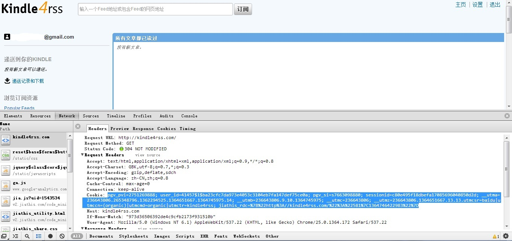
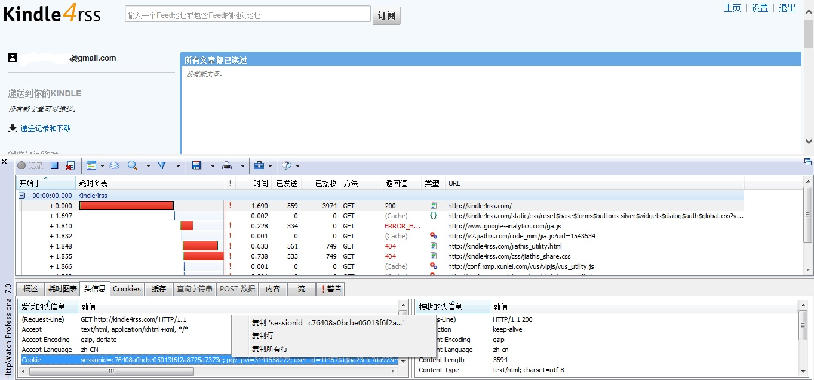

帮助
cookie是某些网站为了辨别用户身份而储存在用户本地终端（Client Side）上的数（通常经过加密），我们采用你提供的cookies来模拟你的登录行为，帮助你自动推送你订阅的内容。
应用会在以下两种情况下为你推送内容：
1.你订阅的内容更新条目数达到20条以上。
2.在你规定的时间，不管有多少条内容都会为你推送。
下面首先介绍如何抓取cookie
一、抓取cookie的方法
1.chrome浏览器
（1）首先在kindle4rss网站登陆你的账号
（2）用ctrl+shift+i唤醒chrome浏览器自带的开发者选项，抓取cookies。
唤出开发者面板后，点开network标签，刷新kindle4rss页面，然后拉到最上面一条，我们可以看到，点击一下，右边跳出一个新窗口，打开header标签，会看到下面有一条cookie的记录，如下图所示，复制cookie对应的值。恭喜，你已经获取到需要的cookie了！跳往第二步吧。

2.ie浏览器
如果你使用ie浏览器，你需要先下载httpwatch帮助来帮助你抓取cookie。
（1）到这里下载httpwatch并安装
（2）在kindle4rss网站登陆你的账号
（3）打开httpwatch，点击左上角的红方块开始记录，然后刷新kindle4rss页面。找到请求kindle4rss对应的那条记录，双击打开，在下面的窗口中头信息标签页中找到cookies，右键复制'session=...',如下图所示。恭喜，你你已经获取到需要的cookie了！跳往下一步吧。

二、提交你的cookies
填写你的cookies，每日定时推送时间，关于本条目的描述，点击添加条目即可！成功后，你将看到刚才所提交的条目，如下图所示。
注：现在定时推送和表述功能尚未加入！